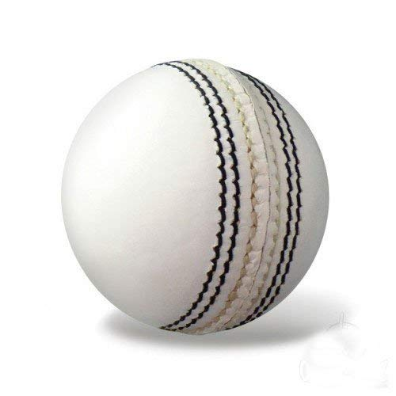
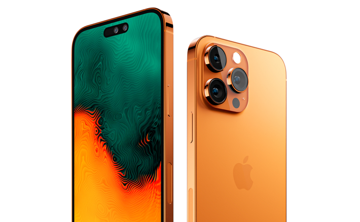
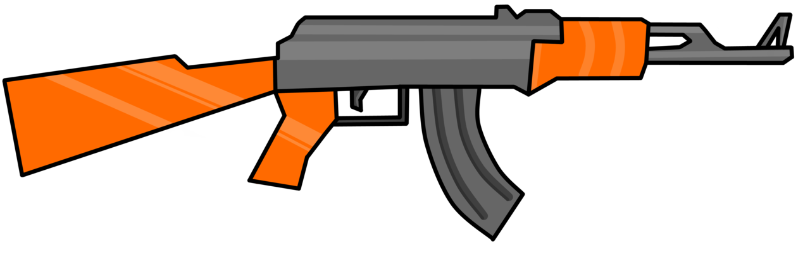

CASE STUDY | GOOGLE LENS vs MOBILENET
GOOGLE LENSVS
Mobilenet
-
Test Image -

- Test Image - 
- Test Image - 
-
Test Image -

- Test Image - 
Output on GOOGLE LENS - Running Shoes
Output on Mobilenet Model - Canvas Shoes
Result - GOOGLE LENS is More Accurate
Output on GOOGLE LENS - Leather Cricket Ball
Output on Mobilenet Model - Tennis Ball
Result - GOOGLE LENS is More Accurate
Output on GOOGLE LENS - Iphone 14
Output on Mobilenet Model - Mobile Phone
Result - GOOGLE LENS is More Accurate
Output on GOOGLE LENS - Headphones
Output on Mobilenet Model - Computer Mouse
Result - GOOGLE LENS is More Accurate
Output on GOOGLE LENS - AK 47
Output on Mobilenet Model - Assault Rifle
Result - GOOGLE LENS is More Accurate
Developed by - Shree Kumaran